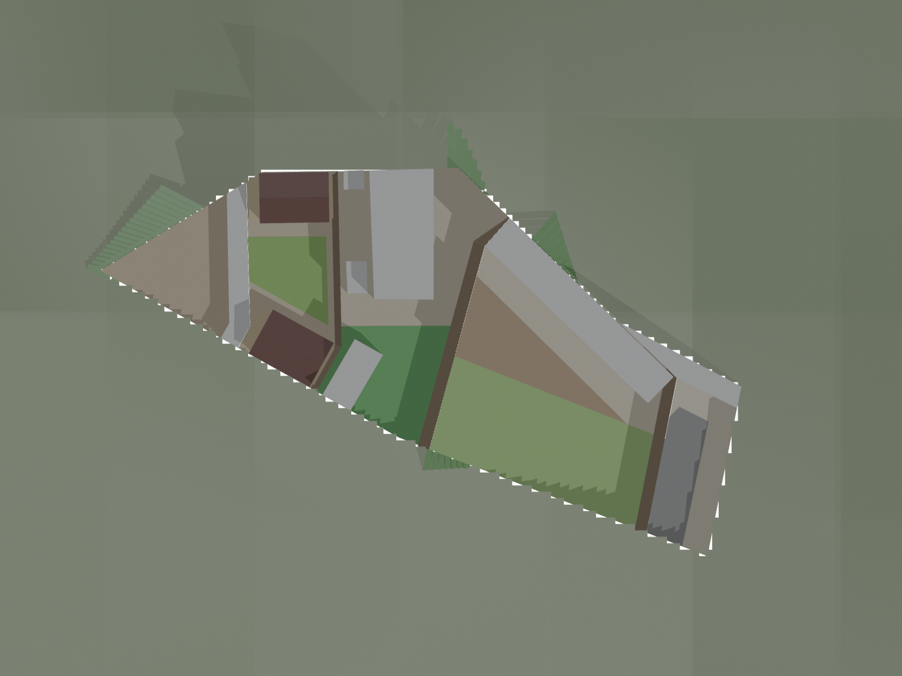
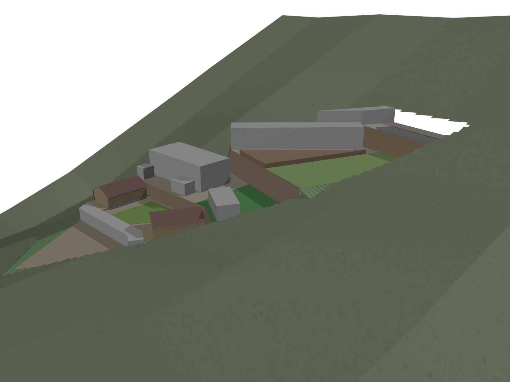
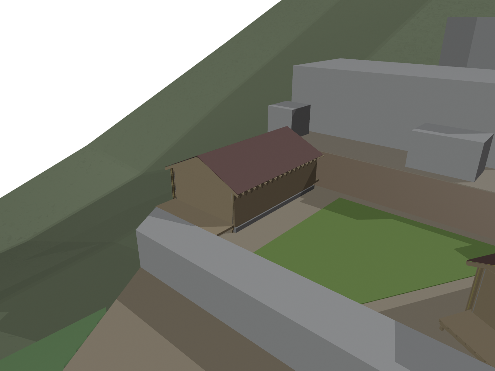

Nava Ranch: master
Anteproyecto de autoconstructor. Muros, cimentaciones, estructura y sismo requieren revision y firma de ingeniero colegiado en Kosovo, estudio de suelo y permiso municipal.
Renders



Anteproyecto de autoconstructor. Muros, cimentaciones, estructura y sismo requieren revision y firma de ingeniero colegiado en Kosovo, estudio de suelo y permiso municipal.


